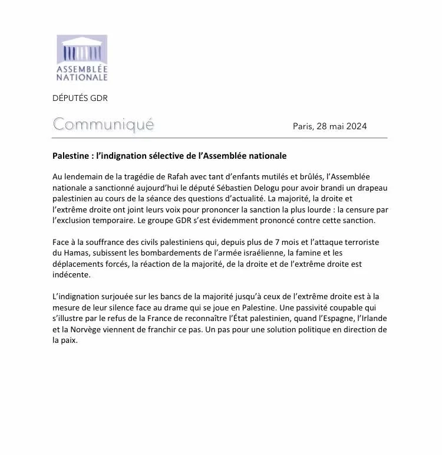

Publication relayée par le PCF 79
Les députés communistes réagissent à la sanction de Sébastien Delogu
Date de mise à jour indiquée par Facebook · 28 mai 2024
Texte de la publication · Les députés communistes
Au lendemain de la tragédie de Rafah avec tant d’enfants mutilés et brûlés, l’Assemblée nationale a sanctionné aujourd’hui le député Sébastien Delogu pour avoir brandi un drapeau palestinien.
Notre communiqué

Sources
Les députés communistes · publication relayée par le PCF 79 · bibliothèque Facebook · AR-0002-FB-01375
À lire aussi · Après les bombardements à Rafah, le PCF demande des sanctions